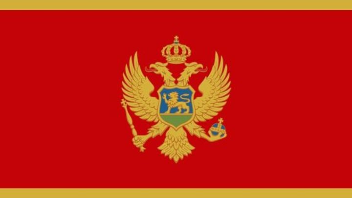
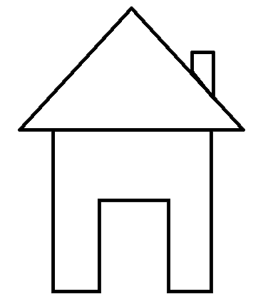

Černá Hora


Historie
Geografie
Kuchyně
Okres Bar
Okres Ulcinj
Okres Budva
Okres Cetinje
Okrej Rožaje
Okres Plav
Okres Herceg Novi
Okres Kotor
Okres Andrijevica
Okres Berane
Okres Bjelo Polje
Okres Danilovgrad
Okres Kolasin
Okres Mojkovac
Okres Nikšič
Okres Plužine
Okres Pljevlja
Okres Podgorica
Okres Tivat
Okres Savnik
Zabljak Okres
Bjelo Polje
Berane
Rozaje
Plav
Andrijevica
Kolasin
Mojkovac
Danilovgrad
Niksic
Savnik
Pluzine
Zabljak
Pljevlja
Herceg Novi
Ulcinj
Bar
Budva
Tivat
Kotor
Cetinje
Podgorica
Kotor UNESCO
Durmitor